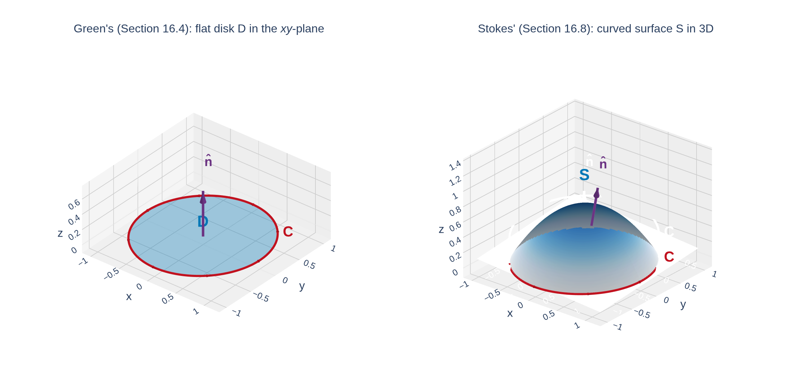

Section 16.8: Stokes' Theorem
Vector Calculus
MTH 310
Calculus III
The Big Picture: Green's Theorem in 3D
In Section 16.4, Green's Theorem connected a line integral around a flat closed curve to a double integral over the flat region it bounds:
\[\oint_C P\,dx + Q\,dy = \iint_D \left(\frac{\partial Q}{\partial x} - \frac{\partial P}{\partial y}\right) dA\]
Stokes' Theorem generalizes this: replace the flat region by any oriented surface \(S\) in 3D, and replace \(C\) by the (possibly non-planar) boundary curve of \(S\).

Think of the flat disk being lifted and bent into a curved surface like a soap film stretched across a bent wire. The curve \(C\) is the wire; \(S\) is the film.
Stokes' Theorem
Theorem: Stokes' Theorem
Let \(S\) be an oriented, piecewise-smooth surface bounded by a simple, closed, piecewise-smooth boundary curve \(C\) with positive orientation. Let \(\vec{F}\) be a vector field whose components have continuous partial derivatives on an open region containing \(S\). Then
\[\boxed{\int_C \vec{F} \cdot d\vec{r} \;=\; \iint_S \mathrm{curl}\,\vec{F} \cdot d\vec{S}.}\]
In words: the circulation of \(\vec{F}\) around the boundary curve equals the flux of curl \(\vec{F}\) through the surface.
Reading each piece:
- \(\displaystyle\int_C \vec{F}\cdot d\vec{r}\) — line integral around the boundary (work / circulation)
- \(\mathrm{curl} \vec{F} = \nabla\times\vec{F}\) — measures local rotation of the field
- \(\displaystyle\iint_S \mathrm{curl} \vec{F}\cdot d\vec{S}\) — total curl flux through \(S\)
Orientation: The Right-Hand Rule
For Stokes' Theorem to work, the orientations of \(C\) and \(S\) must be compatible.
![An interactive 3D figure of a curved blue dome-shaped surface S in space. A red closed boundary curve C runs along its lower edge, with arrows indicating counterclockwise traversal as viewed from above. A bold purple arrow labeled n points upward from the dome, representing the outward unit normal. A small red label marks a right hand icon showing the thumb aligned with n and the fingers curling in the direction of C, illustrating the right-hand rule connecting the orientation of C to the orientation of S.](figures/right_hand_rule.png)
Right-hand rule: curl the fingers of your right hand in the direction of travel along \(C\); your thumb points in the direction of the surface normal \(\vec{n}\).
Equivalently: walk along \(C\) in the positive direction with your head pointing along \(\vec{n}\) — the surface is on your left.
Shortcut for graphs. If \(S\) is oriented upward (normal points up), then \(C\) is traversed counterclockwise when viewed from above.
Green's Theorem Is a Special Case of Stokes'
Take \(S\) = a flat region \(D\) in the \(xy\)-plane, oriented upward (\(\vec{n} = \vec{k}\)), with \(\vec{F} = \langle P, Q, 0\rangle\) (no \(z\)-component, components independent of \(z\)).
Curl: Since \(P, Q\) don't depend on \(z\),
\[\mathrm{curl}\,\vec{F} = \left\langle 0,\; 0,\; \frac{\partial Q}{\partial x} - \frac{\partial P}{\partial y}\right\rangle.\]
Flux through the flat disk:
\[\iint_S \mathrm{curl}\,\vec{F}\cdot d\vec{S} = \iint_D \langle 0,\,0,\,Q_x - P_y\rangle\cdot\langle 0,\,0,\,1\rangle\,dA = \iint_D (Q_x - P_y)\,dA.\]
And Stokes' gives
\[\oint_C P\,dx + Q\,dy = \iint_D (Q_x - P_y)\,dA,\]
which is exactly Green's Theorem.
Quick Check: Identify the Pieces
Let \(S\) be the part of the paraboloid \(z = 9 - x^2 - y^2\) above the \(xy\)-plane, oriented upward. What is the boundary curve \(C\)?
Example 1: Line Integral via Stokes' Theorem
Example 1
Let \(\vec{F}(x,y,z) = \langle 2y\cos z,\; e^x\sin z,\; x\,e^y\rangle\), and let \(C\) be the circle \(x^2+y^2=9\) in the plane \(z=0\), oriented counterclockwise. Evaluate \(\displaystyle\int_C \vec{F}\cdot d\vec{r}\).
The Power of Stokes': Choose the Easier Side
Stokes' gives us a choice: compute the line integral side or the surface integral side — whichever is simpler.
Bonus freedom: the same curve \(C\) bounds many surfaces. Pick the surface that makes \(\iint_S \mathrm{curl} \vec{F}\cdot d\vec{S}\) easiest.
Example 2: Line Integral via Stokes'
Example 2
Evaluate \(\displaystyle\int_C \vec{F}\cdot d\vec{r}\) where \(\vec{F} = \langle 1,\; x+yz,\; xy - \sqrt{z}\rangle\) and \(C\) is the triangular boundary of the part of the plane \(3x + 2y + z = 1\) in the first octant, oriented counterclockwise from above.
Quick Check: Compute the Curl
Let \(\vec{F} = \langle yz,\; xz,\; xy\rangle\). Compute \(\mathrm{curl} \vec{F}\).
Stokes' and Conservative Fields (3D)
Stokes' finally proves the conservative-field theorem we stated without proof in Section 16.5.
Recall (16.5): if \(\vec{F} = \nabla f\), then \(\mathrm{curl}(\nabla f) = \vec{0}\).
Converse (stated, not proved before): if \(\mathrm{curl} \vec{F} = \vec{0}\) on a simply connected region, then \(\vec{F}\) is conservative.
Proof via Stokes'. If \(\mathrm{curl} \vec{F} = \vec{0}\) throughout the region and \(C\) is any closed curve bounding a surface \(S\) in that region:
\[\oint_C \vec{F}\cdot d\vec{r} = \iint_S \mathrm{curl}\,\vec{F}\cdot d\vec{S} = \iint_S \vec{0}\cdot d\vec{S} = 0.\]
Every closed-loop integral is zero, so \(\vec{F}\) is path-independent — i.e., conservative.
The full 3D equivalence on a simply connected domain:
\[\vec{F}\text{ conservative}\;\Longleftrightarrow\;\mathrm{curl}\,\vec{F} = \vec{0}\;\Longleftrightarrow\;\oint_C \vec{F}\cdot d\vec{r} = 0\text{ for all closed }C.\]
Example 3: Choosing a Better Surface
Example 3
Evaluate \(\displaystyle\oint_C \vec{F}\cdot d\vec{r}\) where \(\vec{F} = \langle -y^2,\; x,\; z^2\rangle\) and \(C\) is the intersection of the plane \(y+z = 2\) with the cylinder \(x^2+y^2 = 1\), oriented counterclockwise from above.
Quick Check: Flat-Disk Shortcut
Let \(\vec{F} = \langle z, x, y\rangle\) and \(C\) = unit circle in the \(xy\)-plane, counterclockwise. Evaluate \(\displaystyle\oint_C \vec{F}\cdot d\vec{r}\).
Example 4: Surface Integral via Line Integral
Example 4
Evaluate \(\displaystyle\iint_S \mathrm{curl} \vec{F}\cdot d\vec{S}\) where \(\vec{F} = \langle xz,\; yz,\; xy\rangle\) and \(S\) is the part of the sphere \(x^2+y^2+z^2 = 4\) inside the cylinder \(x^2+y^2 = 1\) with \(z\ge 0\), oriented upward.